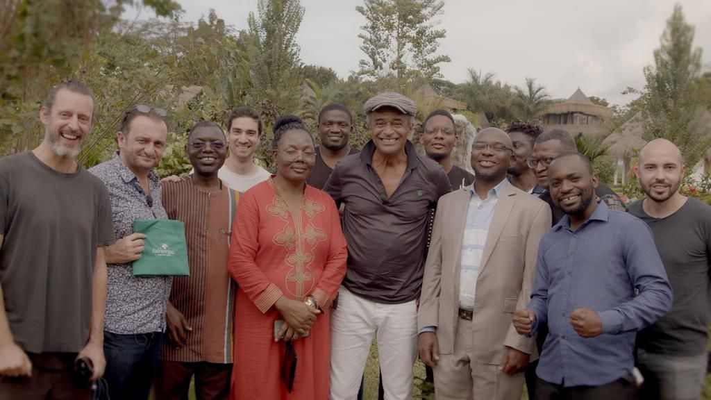

Quatre projets phares, plusieurs études précliniques en cours
Les projets du LIIE structurent une démarche allant de la recherche préclinique la plus exigeante jusqu'à la diffusion clinique la plus large — du patient marseillais à la radiologie interventionnelle de l'espace.

FairEmbo
L'embolisation équitable. Un programme international visant à rendre l'embolisation accessible partout dans le monde, grâce à des fragments de fil de suture disponibles dans tous les hôpitaux.

EmboBio Medical
L'embolisation 100 % naturelle. Issue du LIIE-CERIMED, la société développe un dispositif d'embolisation à base d'agar-agar, aujourd'hui en préparation de ses essais cliniques.

Emborrhoïd®
Une technique mini-invasive née à la Timone. L'embolisation des artères rectales supérieures transforme la prise en charge de la maladie hémorroïdaire — procédure ambulatoire, indolore, préservant le sphincter.

IRIS — Interventional Radiology In Space
La radiologie interventionnelle en apesanteur. Un partenariat CNES, MEDES, SFR et LIIE pour concevoir la boîte à outils interventionnelle des missions habitées longue durée, et des zones isolées sur Terre.
Les études actives, portées par les M2 et thèses en cours
Au-delà des quatre projets phares, le laboratoire conduit une dizaine d'études précliniques actives, chacune adossée à un M2 ou à une thèse en cours. La liste nominative des encadrés est disponible sur la page Équipe.
-
Embolisation splénique partielle — drépanocytose
Premier modèle porcin d'embolisation splénique partielle (SPE) chez le patient drépanocytaire, avec production d'un référentiel préclinique reproductible.
M2 · 2026 Solal Drobinsky · Enc. F. Tradi
-
BARRAGE — glioblastome préclinique
Modèle préclinique d'approche endovasculaire ciblée dans le glioblastome, en lien avec les équipes neuro-interventionnelles.
M2 · 2026 Thomas Victorion · Enc. J.-F. Hak
-
Constriction thoracique — modèle ovin de SDRA
Mise au point et caractérisation longitudinale d'un modèle ovin de syndrome de détresse respiratoire aiguë par constriction thoracique.
M2 · 2026 Pierre Tréhorel · M2 · 2024 David Niddam · Enc. D. Lagier
-
Machine à perfusion SYK
Caractérisation d'une machine à perfusion normothermique sur foie porcin, foie murin et modèles d'ischémie — socle pour la greffe et la conservation d'organe.
M2 · 2026 S. Puia-Negulescu · M2 · 2025 C. Dumas · M2 · 2024 L. Sadelli · Enc. S. Chopinet
-
Microbilles radiomarquées
Développement et évaluation préclinique de microbilles radiomarquées pour la radioembolisation ciblée des tumeurs hépatiques.
M2 · 2025 → Thèse · 2025 Cécile Di Rocco · Enc. P. Habert · Dir. P. Habert
-
Alcoolisation tumorale gélifiée
Formulations d'agents alcooliques gélifiés pour l'alcoolisation tumorale ciblée, avec suivi imagerie-histologie.
M2 · 2025 Manuel Gargiulo · Enc. F. Tradi
-
Plasma plaquettaire dénaturé
Caractérisation d'un plasma plaquettaire dénaturé à visée embolique et régénérative.
Thèse · 2025 Manuel Gargiulo · Dir. V. Vidal
-
Cryo-ablation pulmonaire
Évaluation préclinique des protocoles de cryo-ablation pulmonaire — paramètres thermiques, zones de sécurité, corrélation imagerie.
Thèse · 2025 Alexis Ruimy · Dir. P. Habert
-
EmboBio — dispositif agar-agar
Caractérisation préclinique d'un dispositif d'embolisation 100 % naturel, en lien avec la start-up EmboBio Medical.
Thèse · 2023 Johanna Nguyen · Dir. V. Vidal · co-dir. B. Guillet
-
Embolisation des tendinopathies
Indications, ciblage vasculaire et évaluation clinique de l'embolisation dans les tendinopathies chroniques.
Thèse · 2021 Julien Panneau · Dir. V. Vidal · co-dir. J. Frandon
-
Dispositif IR — stéatose hépatique
Développement d'un dispositif de caractérisation infrarouge de la stéatose hépatique, destiné à la qualification des greffons.
Thèse · 2021 Olivier Lopez · Dir. V. Vidal · co-dir. S. Chopinet
Liste actualisée en avril 2026. Les résultats publiés sont accessibles sur HAL-AMU et sur PubMed.